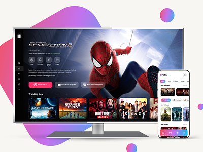

My Projects


OTT Website Clone
A web or mobile application that imitates the features of well-known streaming services like Netflix, Amazon Prime Video, or Disney+ is known as an OTT (Over-The-Top) platform clone. I designed an OTT clone using HTML, CSS, and JavaScript called MovieZone. It includes search functionality also.